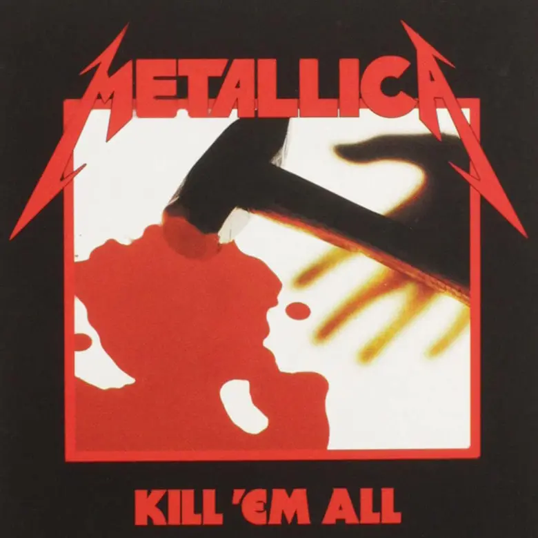
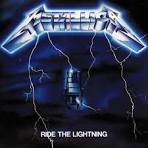
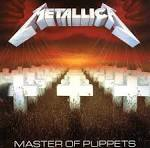
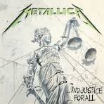
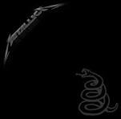
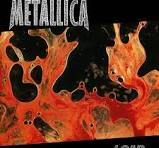
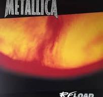
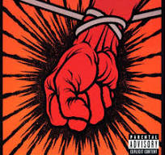
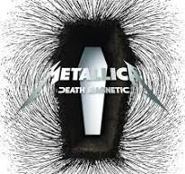
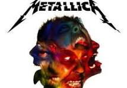

Discografía
Kill 'Em All (1983)

El debut explosivo que marcó el inicio de una era.
- 1. Hit the Lights
- 2. The Four Horsemen
- 3. Metal Militia
- 4. Phantom of the Opera
- 5. Escape
- 6. Seek & Destroy
- 7. Whiplash
- 8. Jump into the Fire
- 9. No Remorse
- 10. Seek & Destroy (Live)
Ride the Lightning (1984)

Un viaje a través de la oscuridad y la complejidad emocional.
- 1. Fight Fire with Fire
- 2. Ride the Lightning
- 3. For Whom the Bell Tolls
- 4. Fade to Black
- 5. Trapped Under Ice
- 6. Escape
- 7. Creeping Death
- 8. The Call of Ktulu
Master of Puppets (1986)

Una obra maestra del thrash metal, aclamada por la crítica.
- 1. Battery
- 2. Master of Puppets
- 3. The Thing That Should Not Be
- 4. Welcome Home (Sanitarium)
- 5. Disposable Heroes
- 6. Disposable Heroes
- 7. Leper Messiah
- 8. Orion
- 9. Damage, Inc
...And Justice for All (1988)

Un álbum épico cargado de justicia y crítica social.
- 1. Blackened
- 2. ...And Justice for All
- 3. Eye of the Beholder
- 4. One
- 5. The Shortest Straw
- 6. Harvester of Sorrow
- 7. The Frayed Ends of Sanity
- 8. To Live Is To Die
- 9. Dyers Eve
Metallica (1991)

El "álbum negro", un fenómeno comercial que redefinió el género.
- 1. Enter Sandman
- 2. Sad But True
- 3. Holier Than Thou
- 4. The Unforgiven
- 5. Wherever I May Roam
- 6. Don't Tread on Me
- 7. Through the Never
- 8. Nothing Else Matters
- 9. Of Wolf and Man
- 10. The God That Failed
- 11. My Friend of Misery
- 12. The Struggle Within
Load (1996)

Una exploración de nuevos sonidos y temáticas, generando controversia.
- 1. Ain't My Bitch
- 2. 2x4
- 3. The House Jack Built
- 4. Until It Sleeps
- 5. King Nothing
- 6. Hero of the Day
- 7. Bleeding Me
- 8. Cure
- 9. Wasting My Hate
- 10. Mama Said
- 11. Thorn Within
- 12. Ronnie
- 13. The Outlaw Torn
Reload (1997)

La continuación de Load, consolidando la experimentación musical.
- 1. Fuel
- 2. The Memory Remains
- 3. Devil's Dance
- 4. The Unforgiven II
- 5. Better Than You
- 6. Slither
- 7. Carpe Diem Baby
- 8. Bad Seed
- 9. Where the Wild Things Are
- 10. Prince Charming
- 11. Low Man's Lyric
- 12. Attitude
- 13. Fixxer
St. Anger (2003)

Un regreso a las raíces del thrash metal con un sonido crudo y directo.
- 1. Frantic
- 2. St. Anger
- 3. Some Kind of Monster
- 4. Dirty Window
- 5. Invisible Kid
- 6. My World
- 7. Shoot Me Again
- 8. Sweet Amber
- 9. The Unnamed Feeling
- 10. Purify
- 11. All Within My Hands
Death Magnetic (2008)

Una vuelta al thrash metal clásico con tintes de modernidad.
- 1. That Was Just Your Life
- 2. The End of the Line
- 3. Broken, Beat & Scarred
- 4. The Day That Never Comes
- 5. All Nightmare Long
- 6. Cyanide
- 7. The Unforgiven III
- 8. The Judas Kiss
- 9. Suicide and Redemption
- 10. My Apocalypse
Hardwired... to Self-Destruct (2016)

Un álbum doble que celebra la fuerza y madurez de la banda.
- 1. Hardwired
- 2. Atlas, Rise!
- 3. Now That We're Dead
- 4. Moth into Flame
- 5. Dream No More
- 6. Halo on Fire
- 7. Confusion
- 8. ManUNkind
- 9. Here Comes Revenge
- 10. Am I Savage?
- 11. Murder One
- 12. Spit Out the Bone
- 13. Lords of Summer
- 14. Ronnie Rising Medley
- 15. When a Blind Man Cries
- 16. Remember Tomorrow
- 17. Helpless (Live)
- 18. Hit the Lights (Live)
- 19. The Four Horsemen (Live)
- 20. Ride the Lightning (Live)
- 21. Fade to Black (Live)
- 22. Jump in the Fire (Live)
- 23. For Whom the Bell Tolls (Live)
- 24. Creeping Death (Live)
- 25. Metal Militia (Live)
- 26. Hardwired (Live)